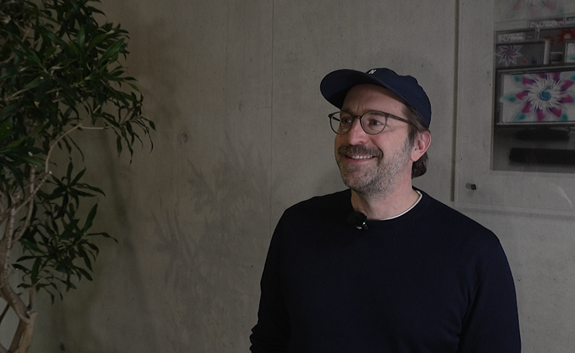

V
Also ich persönlich denke, dass es ein gutes Hilfsmittel sein kann, aber es wird nicht als das verwendet, was es sein könnte. Ich selber mag nicht das generatives AI so Künstler*innen und andere Sachen generiert und damit dann auch Jobs wegnimmt. Das effected mich selber und ich finde es halt auch einfach ziemlich scheiße, auch alleine, weil du halt recht viel hörst. So von wegen ja, das kann KI, mach was anderes und dann denkst du dir so ja okay, das devalidated irgendwie ein bisschen die Kunst von den Artists. Also ich persönlich finds scheiße wenn es als also so für Bilder und andere Sachen verwendet wird. Wenn es aber als Hilfsmittel verwendet wird, dann finde ich es valide. Also ich denke man kann KI gut verwenden, aber es muss halt auf einer reflektierten Art und Weise passieren? Also man muss es bewusst verwenden und ich denke dann ist es legitim, außer wenn man halt sagt: “Jo, generier mir dieses Bild”. Man packt es so wie es ist ins Netz und nimmt dadurch Arbeit weg. Also das finde ich nicht okay.
Klaus Neuburg
Also, ich bin, was KI angeht, glaube ich
ambivalent eingestellt. Auf der einen Seite ist es glaube ich
ein super Tool, um Dinge zu tun, die man
halt alleine nicht kann und vor allen Dingen auch wieder irgendwie vielleicht so ein bisschen mehr in verschiedene Richtungen zu arbeiten und eigentlich
generalistischer zu arbeiten. Was mir persönlich liegt.

Auf der anderen Seite habe ich natürlich auch
Sorgen, was jetzt den
beruflichen Alltag angeht. Von
Studierenden, von Kolleg*innen und vor allen Dingen halt über die
gesellschaftlichen Implikationen, die da drinstehen, die wir, glaube ich,
noch gar nicht richtig alle absehen können.
B12
Fiona Gebhardt: Ja, ich nutze es sehr viel. Ich weiß, dass die ganze Firma; es gibt bestimmt die eine oder andere Person, die ein bisschen weniger Ark damit arbeitet, aber alle hier nutzen KI. Deswegen gibt es mich, damit wir das machen können. Meine Haltung zur KI ist positiv, sonst würden wir es nicht nutzen. Wobei man sich natürlich jeglicher Gefahr oder Risiken, die damit kommen natürlich bewusst sein muss und was das auch zukünftig heißen kann. Ansonsten nutzen wir es entsprechend, weil wir darin ein Tool sehen, das uns unterstützen kann und sich ersetzt und vor allem den Menschen nicht ersetzt. Das heißt: Positiv stehen wir dem gegenüber, sehen aber natürlich auch, dass Datenschutz usw. ein großes wichtiges Thema ist.
Peter Werner: Der Wettbewerb ist nicht unwichtig. Wir wissen also, es gibt andere Agenturen, die sich gar nicht um KI kümmern. Es gibt andere Agenturen, die sich sehr wohl um KI kümmern. Für uns ist das eine Technologie wie alle anderen bis jetzt. Also dieses Internet hat sich auch durchgesetzt oder Cloud Computing hat sich auch durchgesetzt. Früher hat man CD Roms kopiert oder irgendwas von Schulservern runter gezogen, um Adobe zu haben. Jetzt gibt es eben alles in der Cloud. KI ist glaube ich der nächste logische Schritt und vor allem kann man da wirklich wenig gegen machen. Das heißt die KI überrollt uns, Wir als Designer, als Gestalter, als Entwickler, als Texter müssen darauf reagieren. Und ich denke, je schneller und effektiver wir damit arbeiten, das einsetzen und vielleicht dadurch in die richtige Richtung führen oder in Bahn legen, weil natürlich der Markt auf uns Kreative reagiert, haben wir eine Chance mitzubestimmen, was da passiert.
Albert Radl
Das ist so eine Mischung aus Skepsis und Neugier und wenn ich das verwende, dann versuche ich immer ein bisschen darauf zu achten, dass ich meine eigenen ethischen Grundsätze nicht verletze, da es zum Glück inzwischen möglich ist, die KI zu trainieren mit meinen eigenen Daten. Alles andere ist natürlich auch hochproblematisch. Angefangen von juristischen Fragen natürlich über ethische Fragen, aber bei uns natürlich vor allem über künstlerische Fragen. Ich will da nicht in einen Topf gerührt werden, mit der ganzen Datenbank aller Künstler der Welt. Was anderes ist das ja nicht, was da generiert wird und so nehme ich das für mich in Anspruch. Wenn es um so Tasks geht wie Frame Extension aus meinen eigenen Bildern oder Remove von irgendwelchen Sachen, die ich in meinen Bildern finde. Dann ist das zwar auch eine generative KI, aber ich habe dann immer zumindest noch für mich das Gefühl, dass das meine Daten sind und dass die auch aus meinem Hirn kommen. Ich finde schon, dass KI heute erstaunliches leistet und KI auch wirklich für uns sehr nützliches leistet. Und wenn das bewusst eingesetzt wird, bin ich niemand, der sich gegen technischen Fortschritt sträubt, aber man muss natürlich die Gefahr dabei sehen. Ich versuch es unbedingt, meine Handschrift zu bewahren und ich versuche auch anderen Künstlern nichts wegzunehmen. Es ist auch irgendwie ein Communitygedanke, weil ich weiß das alle von meiner ganzen Branche in Aufregung und Not sind und ihre Jobs brechen weg und die KI macht das alles. Und die Kunden sind ja auch nicht besser. Die Kunden nehmen das auf, es kostet nichts oder es kostet Monatsabo und wir haben diese Bilder und wir brauchen jetzt Freelancer nicht mehr. Das ist nämlich auch alles wahr und wir sind die Player, die darauf antworten müssen. Aber das komplett ausklammern. Das möchte ich auch nicht.
Fabio Kolligs
Jetzt gerade halte ich mich so weit fern von KI wie möglich. Ich habe früher, als es halt neu war ein bisschen damit rum experimentiert, aber hab dann relativ schnell festgestellt, dass es viele Dinge fehlerhaft macht und nicht wirklich vertrauenswürdig ist und dass die Zeit, die ich spare dabei es zu benutzen, ich dann später wieder da rein investiere entweder hinter dem KI-Modell aufzuräumen oder zu überprüfen, ob das, was es gemacht hat, überhaupt richtig ist. Deswegen mache ich gerade einfach lieber Dinge selber, weil es schneller geht.